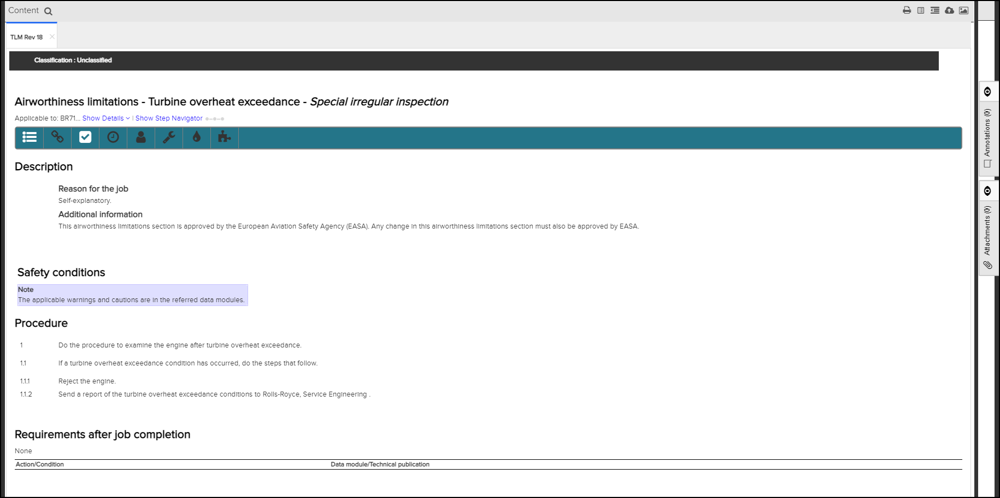
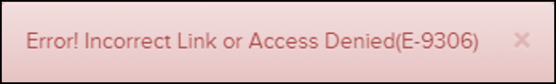
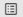
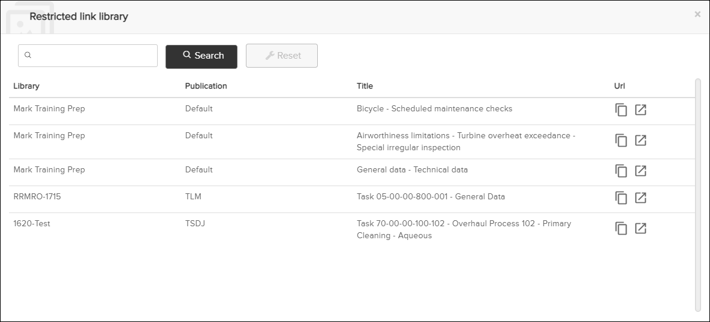
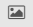

Not applicable for Pinpoint Standalone/Pinpoint Standalone Light.
Users with
Read permissions for the Can view the content of
restricted links privilege can view the content of a restricted link. An admin
user creates the restricted link and sends the link to selected user groups. If a user is a
member of one of those groups and has access to Pinpoint, the user can view the restricted
link.
Note: Restricted links are applicable to S1000D (Data Modules) or iSpec2200 (Tasks)
only.
When you select a restricted link, the content launches in a separate
tab.

Restricted Link - Content Displayed
Note: If you are not a member of a selected user group and try to view content for a
restricted link, an error message appears, for example:

There are several icons available at the top of
the Content page.
The
You can perform these actions on the restricted links in the list:

Restricted Link Library icon opens the Restricted link library dialog. This provides a list of all restricted links for which you have access, for example:
Restricted link library Dialog
- Click the
 Copy to clipboard icon to copy the URL for the restricted link to
your clipboard.
Copy to clipboard icon to copy the URL for the restricted link to
your clipboard. - Click the
 Open in a new tab icon to open the restricted link in a new
tab.
Open in a new tab icon to open the restricted link in a new
tab.
This table lists the icons and their descriptions:
| Icon | Description |
|---|---|
| Click this icon to open the Print dialog, which allows you to export the content in PDF format. Refer to Print to PDF. | |
| Restricted Link Library | Click this icon to open the Restricted link library dialog to view a list of
links for which you have access. Note: You must have Read
permissions for the Can view the content of restricted
links to see this list.
|
| View Content in ATA Style | Click this icon to view the content in ATA style. Refer to View Content in ATA Style. |
| Feedback | Click this icon to open the Feedback form. Refer to Feedback. |
 Figure List |
Click this icon to open the Graphics pane. Then, select
the |